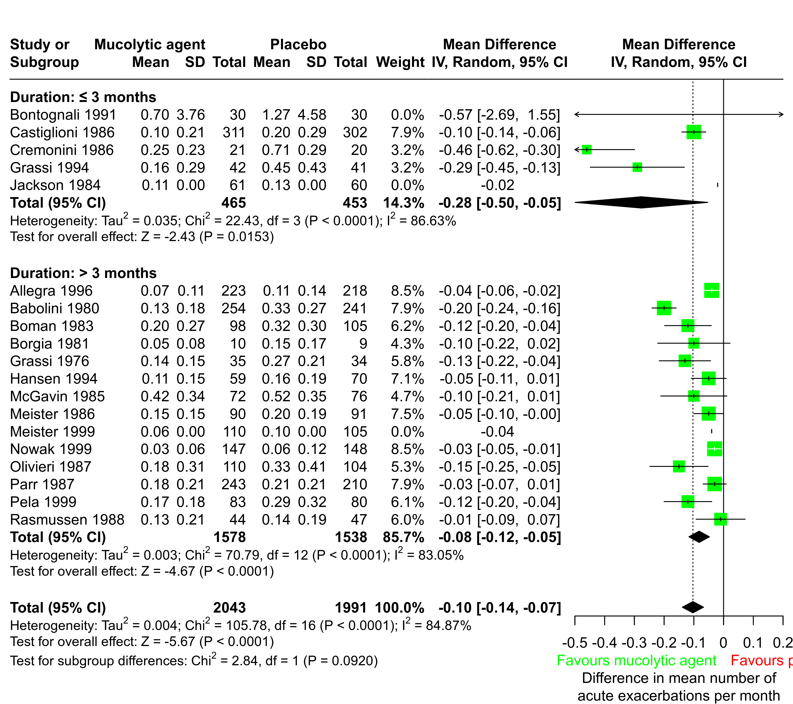

dat.poole2003.RdResults from 19 trials evaluating mucolytic agents in patients with chronic bronchitis or chronic obstructive pulmonary disease.
dat.poole2003The data frame contains the following columns:
| author | character | first author |
| year | integer | publication year |
| Ne | integer | sample size (mucolytic agents) |
| Me | numeric | mean exacerbations per months (mucolytic agents) |
| Se | numeric | standard deviation (mucolytic agents) |
| Nc | integer | sample size (placebo) |
| Mc | numeric | mean exacerbations per months (placebo) |
| Sc | numeric | standard deviation (placebo) |
| duration | character | study duration |
Poole and Black (2003) conducted a Cochrane review to evaluate mucolytic agents versus placebo for patients with chronic bronchitis or chronic obstructive pulmonary disease. The outcome used here is the mean number of acute exacerbations per month. Acute exacerbation is defined as an increase in cough and in the volume or purulence of sputum. All 17 studies included in the meta-analysis report a mean number of exacerbations and we can work with mean differences, rather than standardised mean differences. Note, later versions of this Cochrane review no longer evaluate the mean number of exacerbations per month.
This data set is used as an example in Schwarzer et al. (2015).
Poole, P. J., & Black, P. N. (2003). Mucolytic agents for chronic bronchitis or chronic obstructive pulmonary disease. Cochrane Database of Systematic Reviews, 1, CD001287. https://doi.org/10.1002/14651858.cd001287
Schwarzer, G., Carpenter, J. R., & Rücker, G. (2015). Meta-analysis with R. Cham, Switzerland: Springer.
medicine, pulmonology, raw mean differences, subgroup analysis
### Show first five studies
head(dat.poole2003, 5)
#> author year Ne Me Se Nc Mc Sc duration
#> 1 Bontognali 1991 30 0.70 3.76 30 1.27 4.58 ≤ 3 months
#> 2 Castiglioni 1986 311 0.10 0.21 302 0.20 0.29 ≤ 3 months
#> 3 Cremonini 1986 21 0.25 0.23 20 0.71 0.29 ≤ 3 months
#> 4 Grassi 1994 42 0.16 0.29 41 0.45 0.43 ≤ 3 months
#> 5 Jackson 1984 61 0.11 0.00 60 0.13 0.00 ≤ 3 months
### Load meta package
suppressPackageStartupMessages(library(meta))
### Use RevMan 5 settings
oldset <- settings.meta("RevMan5",
digits.I2 = 2, digits.tau = 3, digits.sd = 2)
### Conduct random effects meta-analysis
m <- metacont(Ne, Me, Se, Nc, Mc, Sc, data = dat.poole2003,
studlab = paste(author, year), common = FALSE,
subgroup = duration,
subgroup.name = "Duration", sep.subgroup = ": ",
label.e = "Mucolytic agent",
label.c = "Placebo",
label.left = "Favours mucolytic agent",
label.right = "Favours placebo",
col.label.left = "green", col.label.right = "red")
#> Warning: Note, studies with non-positive values for sd.e or sd.c get no weight in meta-analysis.
#> Warning: Note, studies with non-positive values for sd.e or sd.c get no weight in meta-analysis.
#> Warning: Note, studies with non-positive values for sd.e or sd.c get no weight in meta-analysis.
### Forest plot
forest(m, xlim = c(-0.5, 0.2),
xlab = paste0("Difference in mean number of\n",
"acute exacerbations per month"))

### Use previous settings
settings.meta(oldset)